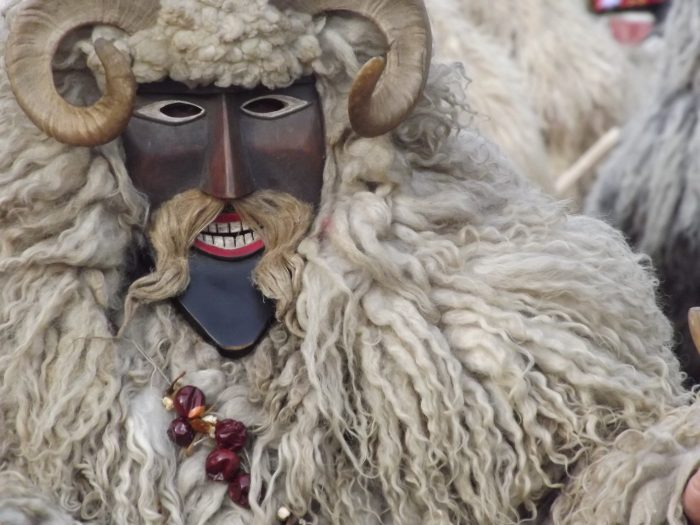

Busójárás története
A mohácsi sokácok messze földön ismert népszokása, a busójárás idejét a tavaszi napfordulót követő első holdtölte határozza meg. Régen Farsangvasárnap reggelétől Húshagyókedd estéjéig tartott a mulatság. A Farsang utolsó csütörtökjén a gyermekek öltöznek maskarába.
 A busójárás a más népek hiedelemvilágában is megtalálható télbúcsúztató, tavaszköszöntő, oltalmazó, termékenységet varázsló ünnepek családjába tartozik. Éppúgy rokonságot mutat a riói és a velencei karnevállal, mint az afrikai népek szokásaival.
Mohácson a hagyomány eredetét a törökűzés legendájával is magyarázzák. A mondának – mely szerint a Mohács-szigeti mocsárvilágba menekült őslakos sokácok megelégelve a rabigát, ijesztő álarcokba öltözve,maguk készítette zajkeltő eszközökkel, az éj leple alatt csónakokkal átkelve a Dunán, kizavarták a törököket Mohácsról – aligha van történeti alapja. A város 1687-ben szabadult fel a török uralom alól, s a sokácság nagy arányú betelepítése csak mintegy tíz évvel ezután kezdődött meg. Minden bizonnyal a balkáni eredetű sokácok korábbi hazájukból hozták magukkal a szokást, mely aztán Mohácson formálódott tovább és nyerte el mai alakját. A népszokás megjelenéséről a XVIII. század végéről vannak az első adatok.
A busó öltözete régen is olyan volt, mint ma: szőrével kifordított rövid bunda, szalmával kitömött gatya, amelyre színes, gyapjúból kötött cifra harisnyát húztak, lábukon bocskort viseltek. A bundát az öv vagy marhakötél fogta össze derekukon, erre akasztották a marhakolompot. Kezükben az elmaradhatatlan kereplőt vagy a soktollú, fából összeállított buzogányt tartották. A leglényegesebb azonban, ami a busót busóvá teszi: a fűzfából faragott, hagyományosan állatvérrel festett birkabőrcsuklyás álarc.
 Az így beöltözött busókat kísérik a jankelék, akiknek az a szerepe, hogy
távol tartsák az utca népét,főleg a gyerekeket a busóktól. Hamuval,
liszttel, ma már csak ronggyal vagy fűrészporral töltött zsákjukkal
püfölik a csúfolódó gyerekhadat. A lefátyolozott arcú nőket és a
lakodalmas viseletbe öltözött férfiakat, továbbá a karneváli jelmezű
alakokat maskarának nevezik Mohácson.
Az így beöltözött busókat kísérik a jankelék, akiknek az a szerepe, hogy
távol tartsák az utca népét,főleg a gyerekeket a busóktól. Hamuval,
liszttel, ma már csak ronggyal vagy fűrészporral töltött zsákjukkal
püfölik a csúfolódó gyerekhadat. A lefátyolozott arcú nőket és a
lakodalmas viseletbe öltözött férfiakat, továbbá a karneváli jelmezű
alakokat maskarának nevezik Mohácson.
Régen a tülkölő, kereplő, kolompot rázó és "bao-bao!"-t ordítozó busócsoportok tulajdonképpeni célja az volt, hogy házról-házra járva kifejezze jókívánságait, elvégezze varázslatait és részesüljön azokban az étel-ital adományokban, amiket sehol sem tagadtak meg tőlük.
Mára az idegenforgalom medrébe terelt népszokás sokat veszített az eredeti hagyományokból, ám látványosság szempontjából sokat nyert. A mai busójárás a régi népszokás központjában, a Kóló téren kezdődik. A beöltözött busók, jankelék, maskarák itt gyülekeznek, itt találkoznak a Dunán csónakokkal átkelt busók az ágyús, az ördögkerekes, a szekeres, a kürtös, a teknős és más busó csoportokkal. A régi elöltöltős busóágyú dörejére a különböző csoportok a főutcán át bevonulnak a város főterére, ahol szabad farsangolás kezdődik. Ezt követően a Duna-parton és a környező utcákban iszonyú zajt keltve ünneplik a farsangot. Szürkületkor visszatérnek a főtérre és a meggyújtott óriási máglya körül táncolnak, dévajkodnak az emberekkel. Ezzel ér véget a Farsangvasárnap. A mohácsiak azonban kedden is farsangolnak, amikor is az újabb főtéri máglyára helyezett, telet jelképező koporsó elégetésével és körültáncolásával búcsúznak a hideg évszaktól, s köszöntik a tavasz eljövetelét.
Mohács állandó látnivalói:
- Mohácsi Nemzeti Emlékhely
- Szent Miklós Vízi- és Taposómalom
- II.Lajos-emlékmű (Csele pataknál)
- Kanizsai Dorottya Múzeum
- Busóudvar